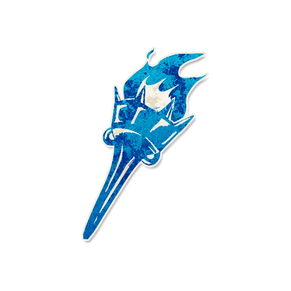

背景故事
"烧吧。"
角色能力
信源
Each night, choose a player: you learn their alignment. If they are not executed tomorrow, they turn evil. You can not be evil.
每个夜晚，你可以选择一名玩家：你会得知他的阵营。如果他明天白天没有被处决，当晚他转变为邪恶阵营。你不会转变为邪恶阵营。
角色简介
猎巫人屈打成招，对其他人使用大记忆恢复术让他们承认自己的阵营。
- 如果一名善良玩家被猎巫人选择，即使猎巫人得知了错误信息，这名善良玩家也会在下一个晚上转变为邪恶。
- 被猎巫人选择的玩家会在猎巫人的行动前加入邪恶并被唤醒告知阵营转变。
范例
小虞是猎巫人，他选择了大岚，大岚是善良的畸形秀演员，所以小虞得知了善良。白天大岚“疯狂”的证明自己是畸形秀，说书人处决了他，他也没有加入邪恶。
小虞是猎巫人。被投毒者选中了，因此在查验善良的小莫时得知了邪恶。白天，小莫和小虞都没有被处决，在入夜后小莫没有加入邪恶。
运作方式
每个夜晚，唤醒猎巫人，让他指向任意一名玩家，随后告知他该名玩家是善良还是邪恶，标记提示标记选择，然后让猎巫人重新入睡。
如果被标记选择的玩家没有被处决，在唤醒猎巫人前唤醒上个被他选择的玩家，告知他现在是邪恶的，随后让他重新入睡并唤醒猎巫人。
提示标记
1：选择
2：邪恶
规则细节
如果猎巫人在中毒醉酒状态下选择玩家，且他没有被处决，那名玩家不会加入邪恶阵营。如果猎巫人在选择玩家后的第二天中毒醉酒，被他选择的玩家依旧会加入邪恶。
与特定角色互动
范扎兹：如果上一个夜晚猎巫人选择了范扎兹，在这个晚上范扎兹行动后，猎巫人会让他加入邪恶。
相克规则
Json字段
{
"ability": "每个夜晚，你可以选择一名玩家：你会得知他的阵营。如果他明天白天没有被处决，当晚他转变为邪恶阵营。你不会转变为邪恶阵营。",
"image": "https://www.bloodstar.xyz/p/Pakchoi/Pakchoi/witchhunter_pakchoi.png",
"edition": "custom",
"flavor": "",
"id": "Witch Hunter",
"firstNightReminder": "",
"otherNightReminder": "",
"name": "猎巫人",
"otherNight": 12802,
"setup": 0,
"reminders": [
"选择","邪恶"
],
"remindersGlobal": [],
"team": "townsfolk",
"firstNight": 10101,
"GstoneID": "slayer"
}

图标画师
摸鱼学徒
角色能力类型
获取信息 阵营转变 回溯性能力（主观回溯）能力效果干扰